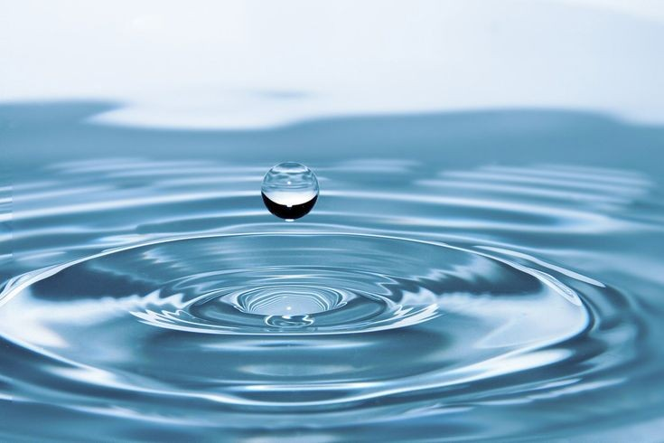

Qual dos seguintes métodos é amplamente utilizado para desinfetar a água potável durante o tratamento?
Aplicação de cloro para eliminar microorganismos
Processo de eletrólise para separar contaminantes
Uso de mercúrio para matar bactérias
Adição de ácido sulfúrico para purificar a água